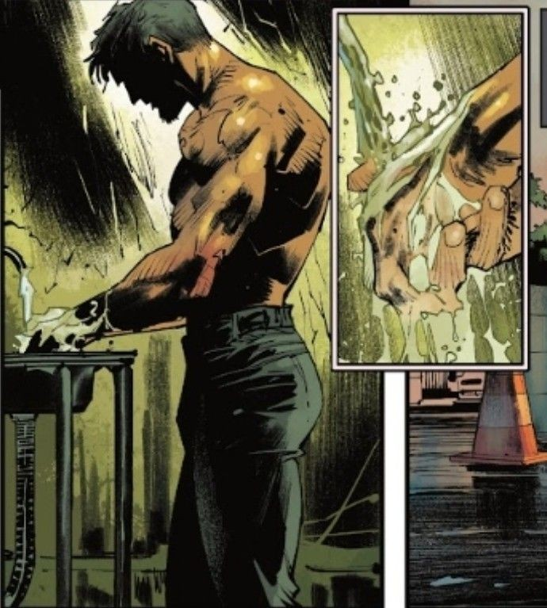
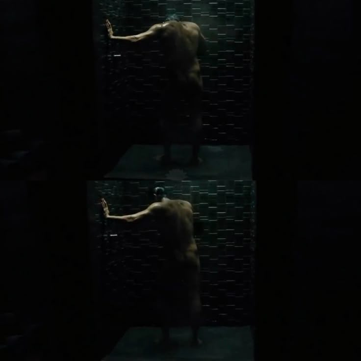
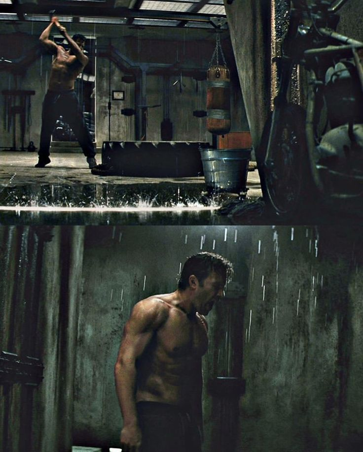

bruce_wayne
- 게시물 5
- 팔로워 331
- 팔로잉 8
Bruce Wayne
웨인 엔터프라이즈(Wayne Enterprises) 회장, 웨인 홍보재단 이사장.
190cm, 93kg, 42세, 흑발, 벽안, 숱한 여성 편력과 이혼 경험, 별명은 고담의 박쥐•••. 현재는 워커홀릭. HL only.


웨인 엔터프라이즈(Wayne Enterprises) 회장, 웨인 홍보재단 이사장.
190cm, 93kg, 42세, 흑발, 벽안, 숱한 여성 편력과 이혼 경험, 별명은 고담의 박쥐•••. 현재는 워커홀릭. HL only.




bruce_wayne
할리우드 명예의 거리에 고담의 이름이 새겨진 역사적인 날. #TheBatman #WalkOfFame